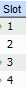
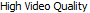

#Setup board front-end #This script assume that the Java GUI is already running. #inputs: required: slotNum=<1, 2, 3, 4> slotEnable=[Disabled, High Video Quality] #Usage: set_board.sikuli slotNum=3 portOption=High Video Quality ############################################################### #common code for every sikuli code. Do not remove this section from me7klib import * import re ############################################################### #YOUR code start here ############################################################### #This is your check for the inputs that you are expecting. def Check_args(): #checking for required arguments Check_arg('slotNum') Check_args() ############################################################ #Main program definitions code start from this point #Any global variables here my_slot = Get_arg('slotNum') my_option = Get_arg('slotOption') #Any definitions are here def Slot_Enable(): '''Enable slot number ''' #First navigate to the correct slot number Set_arg('tabName', 'Setup') Set_arg('tabSubName', 'System') Set_arg('tabSubNameItem', 'Device') RunSikuli('nav_tabs') wait() #need to figure out the slot offset and option offset option_offset = 1100 if my_slot == '1': slot_offset = -18 #click(Pattern("Slot_display.png").targetOffset(0,-18)) elif my_slot == '2': slot_offset = 0 #click("Slot_display.png") elif my_slot == '3': slot_offset = 18 #click(Pattern("Slot_display.png").targetOffset(0,18)) elif my_slot == '4': slot_offset = 36 #click(Pattern("Slot_display.png").targetOffset(0,36)) else: Exit_program('Invalid slotNum given: ' + my_slot, 2) click(Pattern().targetOffset(0, slot_offset)) doubleClick(Pattern().targetOffset(option_offset, slot_offset)) #Setup board option if my_option: if my_option.lower() == 'high video quality': click(); sleep(1); waitVanish() elif my_option.lower() == 'disabled': click() else: Exit_program('Invalid slotOption given: ' + my_option, 2) ####################################################### #Main program flow Slot_Enable()